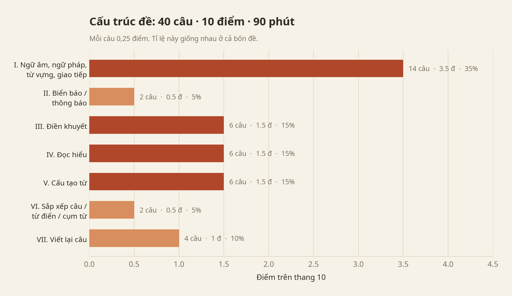
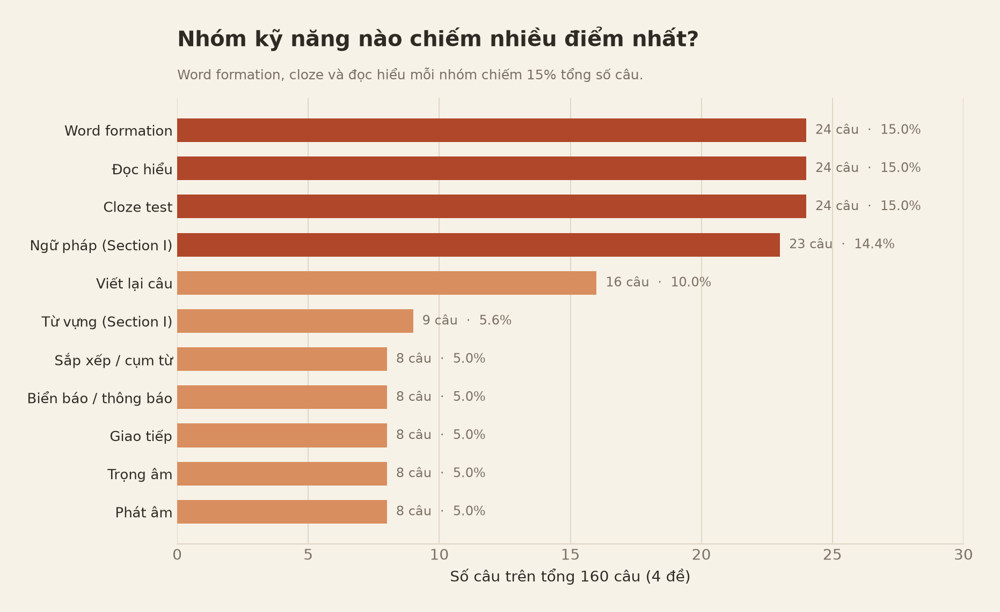
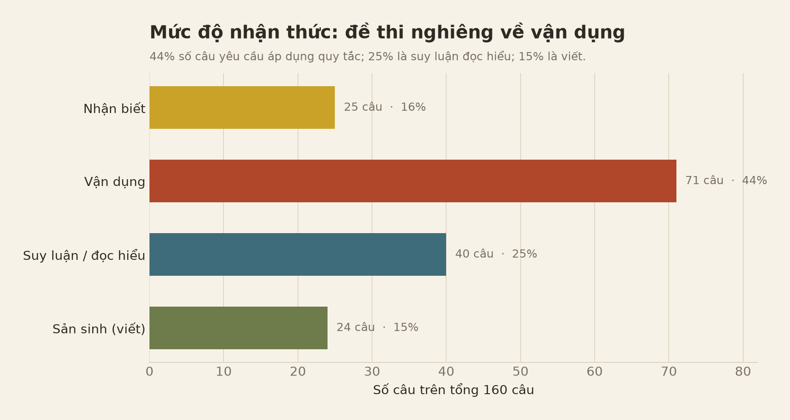
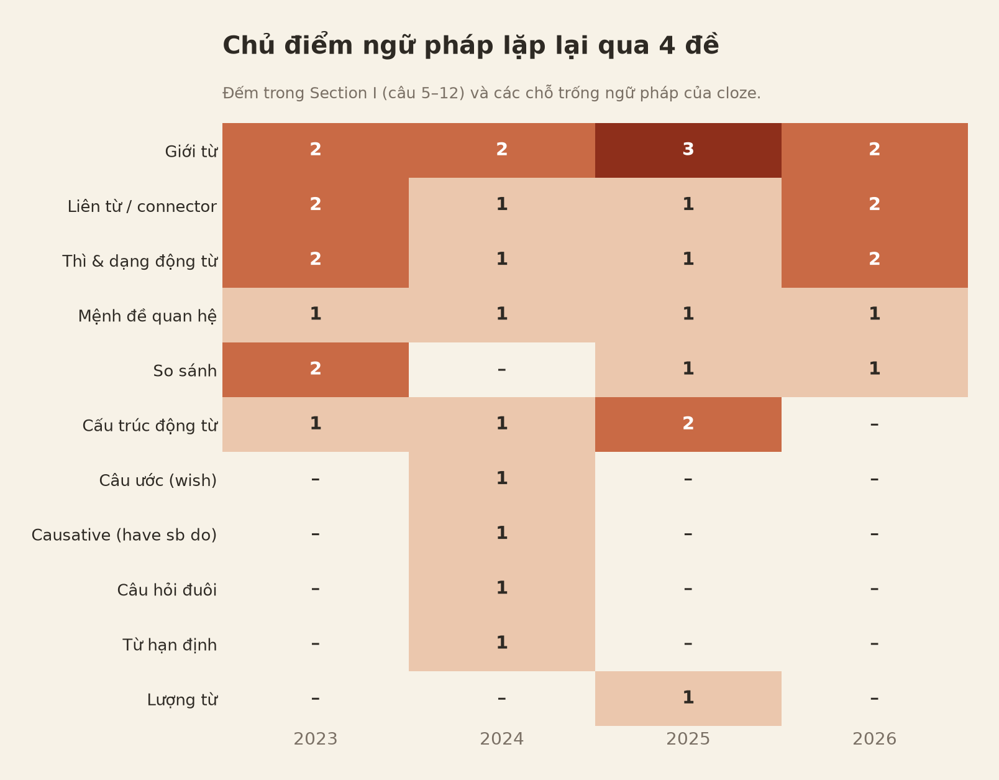
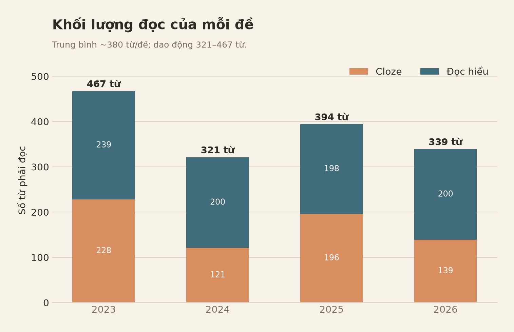
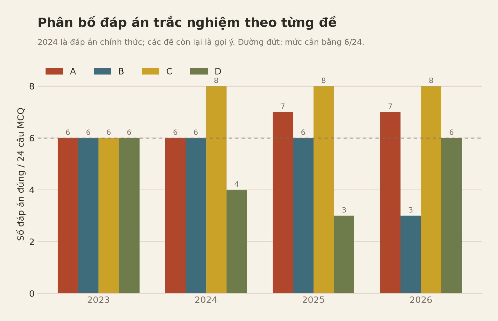

ENGPREP · PHÂN TÍCH DỮ LIỆU
Phân tích dữ liệu 4 đề: 2023 – 2026
Phạm vi: 4 đề chính thức (2023, 2024, 2025, 2026). Đề tham khảo 2026 được dùng để đối chiếu, không tính vào thống kê chính. Dữ liệu: 160 câu hỏi, 40 câu/đề, 10 điểm/đề, thời gian 90 phút. Đơn vị phân tích: từng câu (item-level), không chỉ thống kê theo phần.
Lưu ý về đáp án: PDF đề 2024–2025 có đáp án chính thức ở cuối. Các đề 2023, 2025 và 2026 không kèm đáp án; các đáp án trong báo cáo này do người phân tích tự giải và được ghi rõ là gợi ý. Khi dùng để dạy hoặc ôn tập, nên đối chiếu lại với đáp án của Sở nếu có. Đề tham khảo 2026 gần như trùng với đề chính thức 2026, nên được dùng để kiểm chứng chứ không tính riêng trong thống kê.
provide → đề 2026 điền từ theo mục từ điển
habit. Đề tham khảo 2026 dùng bảng cụm từ, nhưng đề chính
thức chuyển sang từ điển; cả hai đều kiểm tra cụm từ cố định
(lexical chunks).| Đề | Năm học | Loại | Số trang | Đáp án |
|---|---|---|---|---|
TS-10-TA-TPHCM-2023-2024-1.pdf |
2023–2024 | Chính thức | 4 | Tự giải – gợi ý |
de-tieng-anh-2776.pdf |
2024–2025 | Chính thức | 4 | Chính thức (cuối PDF) |
de-thi-ts10-nam-hoc-2025-2026-mon-tieng-anh-72283.pdf |
2025–2026 | Chính thức | 4 | Tự giải – gợi ý |
ThiEngLop10-2026.pdf |
2026 | Chính thức | 4 | Tự giải – gợi ý |
Đề tham khảo 2026 (
english-thanh-nien-3232.pdf) gần như trùng với đề chính thức: cùng 40 câu, cùng đáp án, cùng passage; chỉ khác format Section VI. Vì vậy đề tham khảo không được tính riêng trong thống kê.
Cách làm:
pdftotext -layout, sau đó render
trang PDF thành ảnh để kiểm tra các biển báo, thông báo và phần bị lỗi
font.analysis/exam_items.csv và
analysis/passages.csv.Việc gán nhóm kỹ năng là một cách mã hoá có chủ đích: một câu có thể chạm nhiều kỹ năng cùng lúc. Các con số dưới đây dùng để so sánh tương đối và phát hiện quy luật, không phải một “công thức chấm điểm” tuyệt đối.

| Phần | Nội dung | Số câu | Điểm | Tỉ lệ |
|---|---|---|---|---|
| I | Ngữ âm, ngữ pháp, từ vựng, giao tiếp | 14 | 3,5 | 35% |
| II | Biển báo / thông báo | 2 | 0,5 | 5% |
| III | Cloze test | 6 | 1,5 | 15% |
| IV | Đọc hiểu (4 True/False + 2 MCQ) | 6 | 1,5 | 15% |
| V | Word formation | 6 | 1,5 | 15% |
| VI | Sắp xếp câu / từ điển / cụm từ | 2 | 0,5 | 5% |
| VII | Viết lại câu | 4 | 1,0 | 10% |
| Tổng | 40 | 10 | 100% |
Tỉ lệ này giống hệt nhau ở cả 4 đề chính thức. Nói cách khác, học sinh có thể biết trước “điểm rơi” của từng phần.
| Câu | Nội dung | Điểm |
|---|---|---|
| 1–2 | Phát âm (2 câu) | 0,5 |
| 3–4 | Trọng âm (2 câu) | 0,5 |
| 5–12 | Ngữ pháp + từ vựng (8 câu) | 2,0 |
| 13–14 | Giao tiếp (2 câu) | 0,5 |
| 15–16 | Biển báo / thông báo (2 câu) | 0,5 |
| 17–22 | Cloze (6 câu) | 1,5 |
| 23–26 | True/False (4 câu) | 1,0 |
| 27–28 | Đọc hiểu MCQ (2 câu) | 0,5 |
| 29–34 | Word formation (6 câu) | 1,5 |
| 35–36 | Section VI (2 câu) | 0,5 |
| 37–40 | Viết lại câu (4 câu) | 1,0 |
| Tổng | 40 | 10 |
Điểm đáng chú ý: thứ tự phần và số câu không đổi qua 4 đề. Chỉ có format của câu 35–36 là thay đổi (xem mục 9). Đây là lợi thế rất lớn cho việc luyện theo “vị trí câu hỏi”: luyện đúng câu 1–4, 5–12, 13–14… sẽ hiệu quả hơn luyện tràn lan.
Section I (3,5 điểm) luôn chia thành 4 cụm:
| Câu | Dạng | Số câu |
|---|---|---|
| 1–2 | Phát âm | 2 |
| 3–4 | Trọng âm | 2 |
| 5–12 | Ngữ pháp hoặc từ vựng | 8 |
| 13–14 | Giao tiếp | 2 |
Tỉ lệ ngữ pháp : từ vựng trong câu 5–12 có dao động nhẹ:
| Đề | Ngữ pháp (Q5–12) | Từ vựng (Q5–12) |
|---|---|---|
| 2023 | 6 | 2 |
| 2024 | 7 | 1 |
| 2025 | 6 | 2 |
| 2026 | 4 | 4 |
Đề chính thức 2026 tăng từ vựng lên 4 câu. Đây là thay đổi cần chú ý cho các năm sau: học sinh cần quan tâm hơn đến collocation và nghĩa từ trong ngữ cảnh, không chỉ học mẫu ngữ pháp.

| Nhóm kỹ năng | Số câu / 160 | Tỉ lệ |
|---|---|---|
| Word formation | 24 | 15,0% |
| Cloze | 24 | 15,0% |
| Đọc hiểu | 24 | 15,0% |
| Ngữ pháp (Section I) | 23 | 14,4% |
| Viết lại câu | 16 | 10,0% |
| Từ vựng (Section I) | 9 | 5,6% |
| Sắp xếp / cụm từ | 8 | 5,0% |
| Biển báo / thông báo | 8 | 5,0% |
| Giao tiếp | 8 | 5,0% |
| Trọng âm | 8 | 5,0% |
| Phát âm | 8 | 5,0% |
| Tổng | 160 | 100% |

| Mức độ | Số câu | Tỉ lệ | Ví dụ |
|---|---|---|---|
| Nhận biết | 25 | 16% | phát âm, trọng âm, nghĩa từ |
| Vận dụng | 71 | 44% | chia thì, giới từ, word form, cloze |
| Suy luận | 40 | 25% | đọc hiểu, biển báo, giao tiếp |
| Sản sinh | 24 | 15% | viết lại câu, sắp xếp/điền cụm từ |
Hàm ý: gần 60% số câu (nhận biết + vận dụng) là loại “học quy tắc rồi làm đúng”, có thể cải thiện nhanh bằng luyện có hệ thống. Phần suy luận (25%) cần luyện đọc đều; phần sản sinh (15%) cần luyện viết và kiểm tra lỗi.

Thống kê dưới đây chỉ tính các item ngữ pháp tường minh: câu 5–12 của Section I và các chỗ trống ngữ pháp trong cloze (không tính phát âm, trọng âm, từ vựng thuần, đọc hiểu).
| Chủ điểm | 2023 | 2024 | 2025 | 2026 | Tổng |
|---|---|---|---|---|---|
| Giới từ | 2 | 2 | 3 | 2 | 9 |
| Liên từ / connector | 2 | 1 | 1 | 2 | 6 |
| Thì & dạng động từ | 2 | 1 | 1 | 2 | 6 |
| Mệnh đề quan hệ | 1 | 1 | 1 | 1 | 4 |
| So sánh | 2 | 0 | 1 | 1 | 4 |
| Cấu trúc động từ | 1 | 1 | 2 | 0 | 4 |
| Câu ước (wish) | 0 | 1 | 0 | 0 | 1 |
| Causative (have sb do) | 0 | 1 | 0 | 0 | 1 |
| Câu hỏi đuôi | 0 | 1 | 0 | 0 | 1 |
| Từ hạn định | 0 | 1 | 0 | 0 | 1 |
| Lượng từ | 0 | 0 | 1 | 0 | 1 |
| Tổng | 10 | 10 | 10 | 8 | 38 |
33/38 item rơi vào 6 chủ điểm đầu bảng. Nếu chỉ kịp ôn một phần ngữ pháp, nên ôn theo thứ tự:
on + ngày), vị trí (in), và collocation
(interested in, impression on,
effect on, for a walk).and,
but, because, or,
When; chủ yếu là chọn từ nối theo quan hệ ý nghĩa.to-V, V-ing.who cho người, that cho vật/người trong mệnh
đề xác định.even + comparative.encourage sb to do, forget to do,
prefer, listen to.Năm 2024 có thêm wish, causative
have sb do, câu hỏi đuôi, từ hạn định; năm 2025 có lượng từ
Some of. Mỗi chủ điểm chỉ 1 câu nhưng rất dễ
học và có thể xuất hiện lại. Nên dành 1–2 buổi ôn nhanh các mẫu
này thay vì bỏ qua hoàn toàn.
Trong các item ngữ pháp được kiểm tra của 4 đề, chưa thấy các chủ điểm như câu bị động, câu điều kiện trong Section I (điều kiện chỉ xuất hiện ở phần viết lại), mệnh đề trạng ngữ phức tạp, đảo ngữ. Điều này không có nghĩa là đề sau sẽ không có, nhưng cho thấy đề bám khá sát chương trình và không đánh đố.
Mỗi đề có đúng 6 câu word formation, và cả 4 đề đều tuân theo cùng một template:
| Đề | Danh từ | Tính từ | Trạng từ | Động từ |
|---|---|---|---|---|
| 2023 | 2 | 2 | 1 | 1 |
| 2024 | 2 | 2 | 1 | 1 |
| 2025 | 2 | 2 | 1 | 1 |
| 2026 | 2 | 2 | 1 | 1 |
Cách đếm: các dạng
V-ingnhưsurfing,preparing,entertainingđược xếp vào nhóm động từ;damagingtrong “damaging storms” được xếp vào tính từ.
Các đuôi từ đã xuất hiện:
| Loại | Đuôi thường gặp | Ví dụ trong 4 đề |
|---|---|---|
| Danh từ | -tion/-ation, -ance, -ant,
-ist, -er, -ing |
preparation, assistance, contestant, scientists, explorers, conclusion |
| Tính từ | -ial, -less, -ed,
-ive, -ant, -al,
-ent, -ing |
beneficial, homeless, experienced, effective, pleasant, global, patient, damaging |
| Trạng từ | -ly |
Nearly, successfully, Amazingly, illegally |
| Động từ | -ify, -ing |
beautify, surfing, preparing, entertaining |
Bẫy thường gặp:
scientists, explorers —
phải thêm -s.Amazingly, Nearly —
phải viết hoa chữ cái đầu.damaging (không phải
damaged) trong “damaging storms”.spent time,
looking forward to: dùng V-ing.need to: dùng V nguyên mẫu
(beautify).Trong 24 item, chưa có item nào dùng tiền tố phủ
định (un-, im-, dis-,
ir-). Đây có thể là “khoảng trống” của 4 đề, nhưng cũng là
rủi ro nếu đề sau đổi. Nên biết các tiền tố này nhưng không cần dành quá
nhiều thời gian.
Section I có 9 item từ vựng thuần (2–4 câu/đề), thiên về collocation đời sống hơn là từ học thuật:
look them upexcitedinspiration, subtitleshonest, convenienttraffic jamsdisasterCách học hiệu quả: học từ theo cụm (look up a word, traffic jam, watch without subtitles), không học từ đơn lẻ.
| Đề | Chỗ trống ngữ pháp | Chỗ trống từ vựng |
|---|---|---|
| 2023 | 4 | 2 |
| 2024 | 3 | 3 |
| 2025 | 4 | 2 |
| 2026 | 4 | 2 |
| Tổng | 15 (62,5%) | 9 (37,5%) |
Cloze là phần ngữ pháp + từ vựng, không phải chỉ điền từ. Các chỗ trống ngữ pháp thường là: giới từ, liên từ, mệnh đề quan hệ, dạng động từ, so sánh, lượng từ. Các chỗ trống từ vựng thường là danh từ/tính từ trong ngữ cảnh và collocation.

| Đề | Cloze | Đọc hiểu | Tổng | Chủ đề cloze | Chủ đề đọc hiểu |
|---|---|---|---|---|---|
| 2023 | 228 từ | 239 từ | 467 | Life on the moon (science) | Mother’s Day (family/culture) |
| 2024 | 121 từ | 200 từ | 321 | Da Nang tourism (travel) | Energy conservation (environment) |
| 2025 | 196 từ | 198 từ | 394 | Cooking club for the elderly (community) | Teenagers and sports (health) |
| 2026 | 139 từ | 200 từ | 339 | Deepfake / AI (technology) | Mountain hiking (travel/outdoors) |
Trung bình mỗi đề phải đọc khoảng 380 từ cho cloze + reading. Đề 2023 nặng nhất (467 từ); đề 2024 nhẹ nhất về số từ (321) nhưng đoạn đọc hiểu có câu dài nhất (trung bình 25 từ/câu), nên tốc độ đọc vẫn là yếu tố quan trọng.
| Đề | True/False | Câu hỏi toàn cục | Câu hỏi cục bộ |
|---|---|---|---|
| 2023 | 4 câu (2T/2F) | Q27: main idea | Q28: chi tiết/suy luận |
| 2024 | 4 câu (2T/2F) | Q28: main idea | Q27: từ tham chiếu them |
| 2025 | 4 câu (2T/2F) | Q27: main idea | Q28: NOT mentioned |
| 2026 | 4 câu (3T/1F) | Q27: best title | Q28: cảm xúc của người viết |
Mỗi đề luôn có: - 4 câu True/False (1,0 điểm): kiểm tra khả năng định vị thông tin và phân biệt đúng/sai. - 1 câu hỏi toàn cục (0,25 điểm): ý chính hoặc tiêu đề. - 1 câu hỏi cục bộ (0,25 điểm): chi tiết, từ tham chiếu, NOT mentioned hoặc cảm xúc.
Các đề 2023–2025 đều có 2 True + 2 False; đề 2026 chính thức có 3 True + 1 False. Đây là lần đầu tiên trong mẫu có 3T/1F, cho thấy quy luật 2T/2F không còn tuyệt đối. Chỉ nên dùng để kiểm tra lại sau khi đã làm, không dùng thay evidence.
Trình tự chủ đề qua 4 đề:
gia đình/văn hóa → môi trường/du lịch → cộng đồng/sức khỏe → công nghệ/AI + du lịch
Đề chính thức 2026 đưa deepfake/AI vào cloze. Đây là
tín hiệu nên bổ sung từ vựng công nghệ:
artificial intelligence, deepfake,
misinformation, digital, online,
spread, influence,
public opinion. Đồng thời, các chủ đề quen thuộc vẫn quay
lại: môi trường, du lịch, cộng đồng, sức khỏe, gia đình.
all, always, never) và từ phủ
định.scared, excited,
marvellous).Bốn nhóm này chiếm 2,0 điểm (phát âm 0,5 + trọng âm 0,5 + biển báo 0,5 + giao tiếp 0,5) và có quy luật rất rõ.
i, a, e).| Dạng | Quy tắc gợi ý |
|---|---|
-ed |
/t/ sau âm vô thanh; /d/ sau âm hữu thanh;
/ɪd/ sau t, d |
-s |
/s/ sau âm vô thanh; /z/ sau âm hữu thanh;
/ɪz/ sau s, z, ʃ, tʃ, dʒ |
| Nguyên âm | So sánh âm trong cùng nhóm; chú ý a-e /eɪ/,
i /ɪ/ vs /aɪ/, ea /iː/ vs /e/ |
| Số âm tiết | Quy tắc gợi ý |
|---|---|
| 2 | Danh từ/tính từ thường nhấn âm 1; động từ thường nhấn âm 2 |
| 3 | Từ tận cùng -tion/-sion nhấn âm 2;
-ity/-ical/-ic nhấn âm 3; nhiều tính từ 3 âm tiết nhấn âm
1 |
Đây là những quy tắc có ngoại lệ; khi luyện nên học theo từng nhóm từ thật, không chỉ học quy tắc.
Mỗi đề có 2 câu, thường gồm: - 1 biển an toàn/cơ sở vật chất: không nhảy xuống nước, không xả rác vào toilet, không để vòi nước chảy, cấm thuốc lá điện tử. - 1 thông báo dịch vụ/sự kiện: đặt bàn trước, khuyến mãi căng tin, cuộc thi viết, giảm giá.
Cách làm: đọc đúng hành động bị cấm/được phép và điều kiện đi kèm (thời gian, đối tượng, số lượng). Đừng chọn phương án chỉ vì có từ giống biển báo.
| Đề | Chức năng 1 | Chức năng 2 |
|---|---|---|
| 2023 | động viên (Good luck in the exam!) |
phản hồi lời xin lỗi |
| 2024 | chấp nhận gợi ý (That sounds great!) |
cho phép (Of course. You can.) |
| 2025 | chấp nhận gợi ý (Let’s do it!) |
hỏi giờ (What time does the movie start?) |
| 2026 | hỏi thăm sức khỏe (What’s the matter with you?) |
từ chối lời mời (No, thanks) |
Mỗi đề có 1 câu “chức năng” và 1 câu “phản hồi”. Nên học 8 nhóm chức năng: gợi ý, mời, đề nghị, xin lỗi, cảm ơn, xin phép, động viên, hỏi thăm sức khỏe.
| Nhóm pattern | 2023 | 2024 | 2025 | 2026 | Tổng |
|---|---|---|---|---|---|
| Điều kiện / wish | Q37 | Q38 | Q38 | Q37 | 4 |
| Cụm từ + V-ing | Q40 (fond of) |
Q37 (keen on) |
— | Q38 (mind) |
3 |
Hiện tại hoàn thành + since |
— | Q39 | Q39 | — | 2 |
Kết quả so/such ... that |
Q39 | — | Q40 | — | 2 |
| Phrasal verb | — | — | Q37 (broke down) |
Q39 (run out) |
2 |
| Câu gián tiếp | Q38 | — | — | — | 1 |
| Mệnh đề lý do | — | Q40 | — | — | 1 |
| Tương phản | — | — | — | Q40 | 1 |
Quy luật: mỗi đề có đúng 1 câu điều
kiện/wish. Ngoài ra, 3/4 đề có cụm động từ + V-ing; 2/4 đề có
hiện tại hoàn thành + since, kết quả so/such,
phrasal verb. Đây là 5 nhóm nên luyện kỹ.
Các mẫu cụ thể cần nằm lòng:
If you + V, you can + V /
Unless + S + V, S + will + VIf I were you, I would + VS + wish + S + V(past) / had + V3be fond of / be keen on / mind + V-ingIt has been + time + since + S + last + V(past)S + be + so + adj + that + S + V /
It was such + (a/an) + adj + N + that + S + VS + broke down / has run out ofAlthough + clause / Despite + N/V-ing| Đề | Dạng | Nội dung |
|---|---|---|
| 2023 | Sắp xếp từ thành câu | Nuclear power; The host band |
| 2024 | Sắp xếp từ thành câu | Uncle Hồ; Studying abroad |
| 2025 | Điền từ theo mục từ điển | provide → provide information,
provides an opportunity |
| 2026 | Điền từ theo mục từ điển | habit → break the habit,
eating habits |
Hai đề gần đây nhất (2025 và 2026) không còn sắp xếp câu, mà dùng mục từ điển để kiểm tra cụm từ cố định trong ngữ cảnh. Đề tham khảo 2026 dùng bảng cụm từ, nhưng đề chính thức chuyển sang mục từ điển; cả hai đều kiểm tra cùng một kỹ năng. Đây là thay đổi quan trọng:
provides), số nhiều (eating habits), giới từ
đi kèm (break the habit of).
| Đề | A | B | C | D | Tổng MCQ | True/False |
|---|---|---|---|---|---|---|
| 2023 | 6 | 6 | 6 | 6 | 24 | 2T/2F |
| 2024 | 6 | 6 | 8 | 4 | 24 | 2T/2F |
| 2025 | 7 | 6 | 8 | 3 | 24 | 2T/2F |
| 2026 | 7 | 3 | 8 | 6 | 24 | 3T/1F |
| Tổng | 26 | 21 | 30 | 19 | 96 | 9T/7F |
Nhận xét:
Cảnh báo: đây là mẫu nhỏ (24 câu/đề). Không nên dùng “đếm chữ cái” để đoán đáp án. Quy luật cân bằng chỉ có giá trị kiểm tra lại sau khi đã làm bằng kiến thức.
Điểm đáng tin hơn là True/False: 2023–2025 đều có 2 True + 2 False; 2026 có 3 True + 1 False. Quy luật 2T/2F không còn tuyệt đối, nên chỉ dùng để kiểm tra nếu kết quả lệch bất thường (4T/0F hoặc 0T/4F).
| Yếu tố | 2023 | 2024 | 2025 | 2026 | Xu hướng |
|---|---|---|---|---|---|
| Cấu trúc tổng | 40 câu/10đ/90 phút | 40/10/90 | 40/10/90 | 40/10/90 | Ổn định |
| Section VI | Sắp xếp câu | Sắp xếp câu | Từ điển | Từ điển | Đổi từ 2025 |
| Từ vựng Section I | 2 câu | 1 câu | 2 câu | 4 câu | Tăng ở 2026 |
| Chủ đề đọc | Gia đình/văn hóa | Môi trường/du lịch | Cộng đồng/sức khỏe | AI/du lịch | Cập nhật công nghệ |
| Tổng từ phải đọc | 467 | 321 | 394 | 339 | Dao động 321–467 |
| Word formation | 2N/2Adj/1Adv/1V | 2N/2Adj/1Adv/1V | 2N/2Adj/1Adv/1V | 2N/2Adj/1Adv/1V | Ổn định |
| True/False | 2T/2F | 2T/2F | 2T/2F | 3T/1F | 2026 không còn cân bằng tuyệt đối |
| Đáp án MCQ | 6/6/6/6 | 6/6/8/4 | 7/6/8/3 | 7/3/8/6 | C hơi trội |
Đọc xu hướng:
| Ưu tiên | Nhóm | Số câu | Điểm | Vì sao |
|---|---|---|---|---|
| 1 | Word formation | 6 | 1,5 | Template 2N/2Adj/1V/1Adv; quy tắc đuôi từ rõ; 15% điểm |
| 2 | Phát âm + trọng âm | 4 | 1,0 | Câu 1–4 cố định; -ed/-s, nguyên âm, stress 2/3 âm
tiết |
| 3 | Biển báo + giao tiếp | 4 | 1,0 | Chức năng cố định; dễ ăn điểm nếu đọc kỹ |
| 4 | Ngữ pháp lõi Q5–12 | 6–8 | 1,5–2,0 | Giới từ, liên từ, thì, mệnh đề quan hệ, so sánh |
| 5 | Cloze | 6 | 1,5 | 62,5% là ngữ pháp; luyện collocation và từ nối |
| 6 | Đọc hiểu | 6 | 1,5 | 4 T/F + 1 ý chính + 1 chi tiết; luyện scan/paraphrase |
| 7 | Viết lại câu | 4 | 1,0 | 5 nhóm pattern lặp lại; luyện viết đúng thì/giới từ |
| 8 | Section VI | 2 | 0,5 | Format mới; học cụm từ cố định và cách dùng từ điển |
Điểm nhanh: ưu tiên 1–3 = 3,5 điểm. Cộng ngữ pháp lõi = khoảng 5,0–5,5 điểm. Cộng thêm cloze và đọc hiểu = có thể tiến tới 7,5–8,0. Viết lại câu và Section VI là phần nâng điểm cuối.
Đây là ước tính định hướng, không phải cam kết điểm số. Kết quả còn phụ thuộc vào nền tảng và thời gian luyện.
| Tuần | Trọng tâm | Bài tập | Mục tiêu |
|---|---|---|---|
| 1 | Câu 1–14 + ngữ pháp lõi | 100 câu trắc nghiệm; bảng thì, giới từ, liên từ, mệnh đề quan hệ | Đúng 80% câu 1–14 |
| 2 | Word formation + cloze | 120 câu word form; 6 bài cloze; sổ tay đuôi từ + collocation | Đúng 5/6 word form; 4/6 cloze |
| 3 | Đọc hiểu + biển báo/giao tiếp | 8 passage; 40 câu T/F; 20 câu biển báo/giao tiếp | Đúng 5/6 reading |
| 4 | Viết lại + Section VI + mock | 40 câu viết lại; 20 câu Section VI; 2 đề 90 phút | 8+ điểm; có log lỗi |
Mỗi ngày 45–60 phút. Sau mỗi đề, ghi lỗi vào 3 cột: lỗi kiến thức – lỗi đọc đề – lỗi bất cẩn. Tuần 4 chỉ ôn lại log, không học thêm kiến thức mới.
| Phần | Thời gian |
|---|---|
| Câu 1–4 (phát âm/trọng âm) | 3 phút |
| Câu 5–14 (ngữ pháp/từ vựng/giao tiếp) | 17 phút |
| Câu 15–16 (biển báo) | 3 phút |
| Câu 17–22 (cloze) | 10 phút |
| Câu 23–28 (đọc hiểu) | 18 phút |
| Câu 29–34 (word formation) | 10 phút |
| Câu 35–36 (Section VI) | 5 phút |
| Câu 37–40 (viết lại) | 14 phút |
| Kiểm tra lại | 10 phút |
| Tổng | 90 phút |
Đề 2026 chính thức gần như trùng khớp với đề tham khảo đã phân tích trước đó. Bảng dưới đối chiếu các dự đoán với đề chính thức:
| Dự đoán trước đó | Đề 2026 chính thức | Kết quả |
|---|---|---|
| 40 câu, 10 điểm, 90 phút, 7 phần | Giữ nguyên | Đúng |
| Câu 1–4 phát âm/trọng âm; 5–12 ngữ pháp/từ vựng; 13–14 giao tiếp; 15–16 biển báo; 17–22 cloze; 23–26 T/F; 27–28 đọc hiểu; 29–34 word formation; 35–36 Section VI; 37–40 viết lại | Giữ nguyên thứ tự | Đúng |
| Word formation: 2 danh từ + 2 tính từ + 1 trạng từ + 1 động từ | Đúng 6 câu, đúng template | Đúng |
| Đọc hiểu: 4 T/F + 1 câu ý chính/tiêu đề + 1 câu chi tiết | Đúng; T/F là 3T/1F | Đúng cấu trúc; 2T/2F không còn đúng |
| Ngữ pháp: giới từ, liên từ, thì, mệnh đề quan hệ, so sánh | Đúng 5 chủ điểm lõi | Đúng |
| Section VI: tiếp tục điền cụm từ/từ điển | Dùng mục từ điển habit |
Đúng hướng |
| Viết lại: điều kiện/wish, cụm động từ + V-ing, hiện tại hoàn thành/kết quả, phrasal verb/tương phản | Đúng 4 nhóm | Đúng |
| Section I tăng từ vựng, cloze chủ đề AI | 4 câu từ vựng; cloze deepfake/AI | Đúng |
Hàm ý cho 2027:
Điều không nên làm: học tủ theo chủ đề đoán trước. Dữ liệu cho thấy đề xoay chủ đề, nhưng giữ nguyên kỹ năng. Học kỹ năng quan trọng hơn đoán nội dung.
passages.csv nhưng không dùng để xếp hạng độ
khó, vì công thức này không được thiết kế cho người học EFL và
rất nhạy với độ dài đoạn.| Câu | Vấn đề | Cách xử lý |
|---|---|---|
| 2023 Q13 | PDF in ra thiếu lời thoại của David, chỉ còn “David:” | Đáp án A suy ra từ phản hồi “Still a little worried…” |
| 2023 Q15 | Biển báo là hình, trích text không thấy nội dung | Đã render ảnh; đáp án D |
| 2024 Q10 | Lỗi chính tả “forger” thay vì “forget” | Không ảnh hưởng đáp án B |
| 2024 Q15 | Biển báo là hình | Đã render ảnh; đáp án C, khớp đáp án chính thức |
| 2025 Q15 | Biển báo là hình | Đã render ảnh; đáp án A |
| 2025 Q35–36 | Dạng điền 2–3 từ, có thể có biến thể | Đáp án gợi ý theo entry provide |
| 2026 Q20 | fame là phương án gần nghĩa nhất với “reputation” |
Đáp án C, độ tin cậy trung bình |
| 2026 Q22 | Dangerously hơi khiên cưỡng, nhưng loại trừ được các
phương án còn lại |
Đáp án D, độ tin cậy trung bình |
| Tệp | Nội dung |
|---|---|
analysis/exam_items.csv |
160 item đã mã hoá đầy đủ |
analysis/passages.csv |
Thống kê 8 đoạn cloze/reading |
analysis/summary.json |
Tổng hợp số liệu theo đề |
analysis/*_summary.csv |
Các bảng tổng hợp: section, skill, grammar, answer |
analysis/build_dataset.py |
Script tạo dataset |
analysis/make_charts.py |
Script tạo biểu đồ |
analysis/figures/ |
6 biểu đồ dùng trong báo cáo |
2024 là đáp án chính thức. Các cột còn lại là gợi ý do người phân tích tự giải.
T= True,F= False.
| Câu | 2023 | 2024 | 2025 | 2026 |
|---|---|---|---|---|
| 1 | B | C | D | B |
| 2 | B | B | C | A |
| 3 | D | B | A | A |
| 4 | B | A | B | D |
| 5 | B | D | B | A |
| 6 | C | A | A | D |
| 7 | B | C | C | C |
| 8 | C | D | B | A |
| 9 | A | C | C | C |
| 10 | A | B | C | C |
| 11 | D | A | D | B |
| 12 | C | A | A | A |
| 13 | A | B | A | B |
| 14 | D | C | C | D |
| 15 | D | C | A | C |
| 16 | D | A | C | C |
| 17 | A | B | B | C |
| 18 | B | C | C | D |
| 19 | A | D | A | A |
| 20 | C | A | D | C |
| 21 | D | C | C | C |
| 22 | C | D | B | D |
| 23 | T | F | T | T |
| 24 | F | T | F | F |
| 25 | F | F | F | T |
| 26 | T | T | T | T |
| 27 | A | B | B | D |
| 28 | C | C | A | A |
| 29 | beneficial | preparation | attraction | global |
| 30 | contestant | experienced | pleasant | entertaining |
| 31 | homeless | beautify | preparing | patient |
| 32 | Nearly | effective | Amazingly | exhibition |
| 33 | conclusion | assistance | scientists | illegally |
| 34 | surfing | successfully | damaging | explorers |
| Câu | Đáp án |
|---|---|
| 35 | Nuclear power is not only expensive but also dangerous to our environment. |
| 36 | The host band started off the concert by presenting a mashup of their hit songs. |
| 37 | If you change the way you learn vocabulary, you can improve your English. |
| 38 | Robert suggested that those empty bottles be collected for recycling. |
| 39 | Tom is very lazy, so he can’t get good marks at school. |
| 40 | Michael is fond of playing football after school. |
| Câu | Đáp án |
|---|---|
| 35 | Every one of us should follow the example set by Uncle Hồ, our beloved leader. |
| 36 | Studying abroad gives students opportunities to learn about different cultures. |
| 37 | The children are keen on making models of animals in their free time. |
| 38 | If I were you, I would go to the dentist twice a year. |
| 39 | It has been two years since she last participated in a competition. |
| 40 | Because he performed well, he was nominated as Singer of the Year. |
| Câu | Đáp án |
|---|---|
| 35 | Volunteers are ready to provide information about how to get to the museum. |
| 36 | The summer program provides an opportunity for learners to better their English skills. |
| 37 | Our car broke down on the way to the beach. |
| 38 | Unless he catches the first metro, he will be late for the conference. |
| 39 | She hasn’t written to her grandparents since last April. |
| 40 | It was such awful weather that we couldn’t go picnicking as planned. |
| Câu | Đáp án |
|---|---|
| 35 | I’m trying to break the habit of staying up late. |
| 36 | Your eating habits play an important role in body weight control. |
| 37 | Brenda wishes she had her own locker at school. |
| 38 | Lucie doesn’t mind helping her friends with exercises after class. |
| 39 | The shop has run out of roses. |
| 40 | Although the project was practical, nobody wanted to carry it out. |
Báo cáo được tạo từ dữ liệu trích xuất của 4 PDF gốc. Nếu phát hiện sai lệch đáp án, nên ưu tiên đáp án chính thức của Sở GD&ĐT TP.HCM.